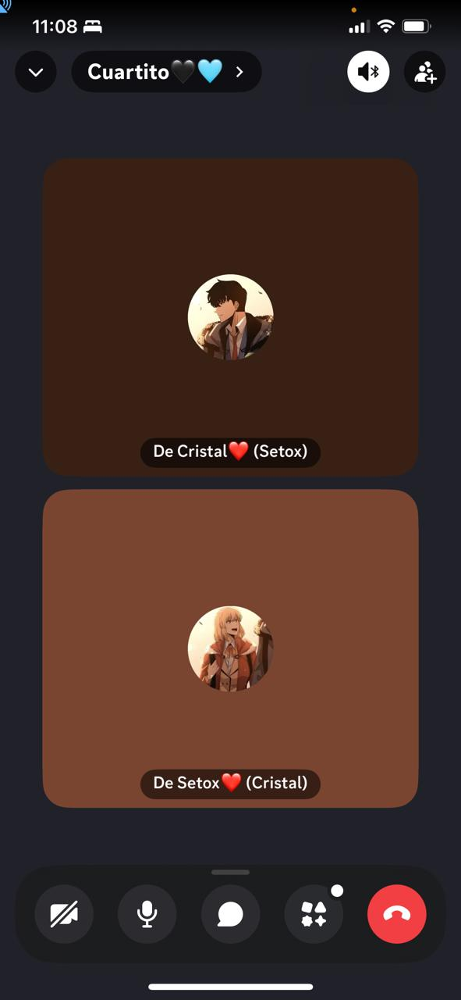
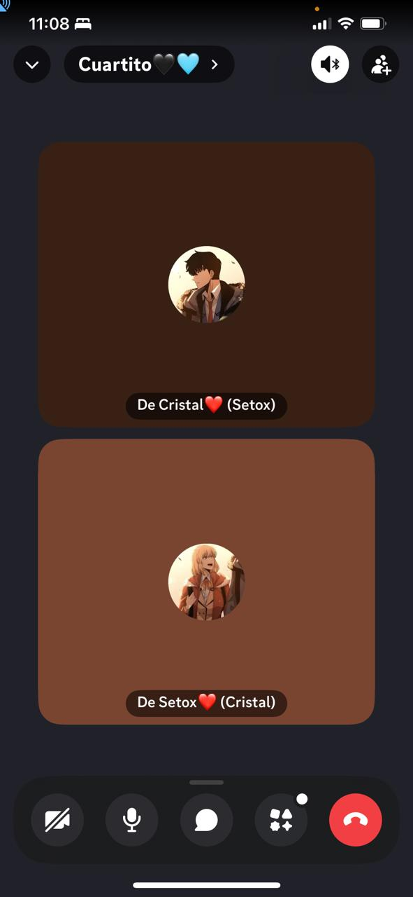
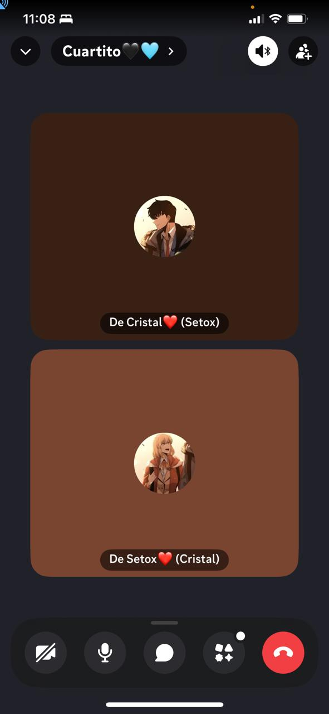
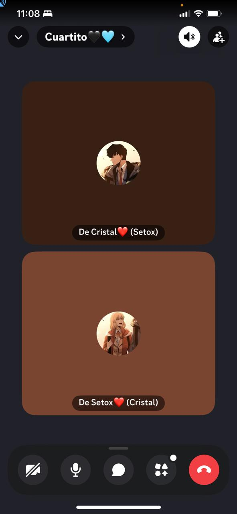

Feliz 2 meses juntos mi amor 💖
Te amo mucho, gracias por darme este tiempo a tu lado. Has sido muy especial para mí. Pasamos por dificultades, pero quiero que ante esas cosas que pasen, quiero seguir a tu lado. No soy perfecto, pero siempre te demostraré de miles de maneras cuánto te amo, mi amor.
Esta es una pequeña muestra de mi amor por ti. Eres una mujer maravillosa, trabajadora, capaz de lograr cualquier cosa. Habrá gente que te lastimará con muchas cosas, pero recuerda que aquí estoy yo, para acompañarte, sacarte una sonrisa y hacerte sentir especial. 💕